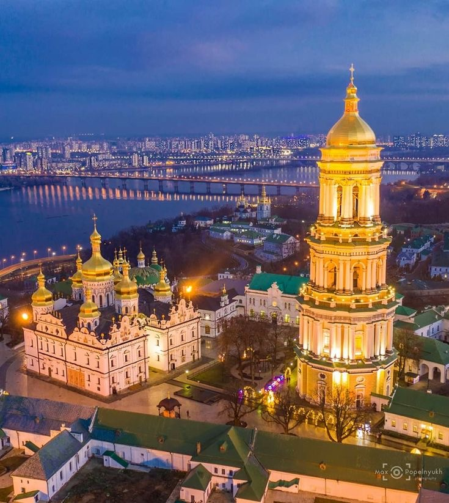
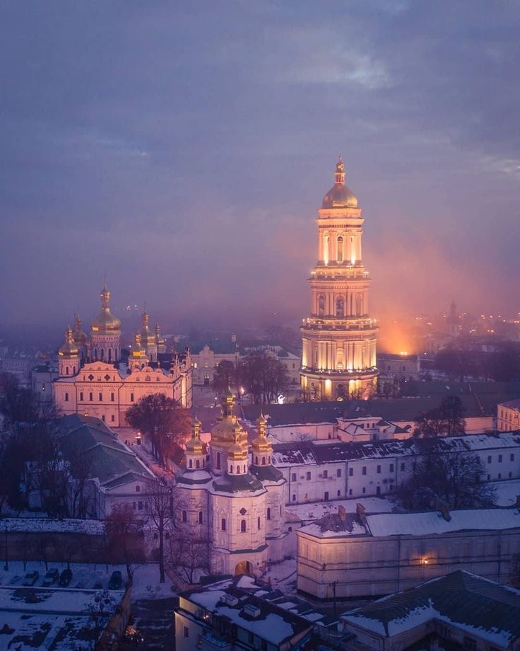

Києво-Печерська лавра – це один із найважливіших духовних і культурних символів України, який по-справжньому вражає. Заснована в 1051 році, вона є однією з найстаріших православних святинь Східної Європи. Її вважають чудом України не лише через її архітектурну красу, а й завдяки глибокій історії, духовному значенню та численним культурним надбанням.
Передусім Києво-Печерська лавра відома як центр духовності. Її заснування пов’язане з діяльністю преподобних Антонія та Феодосія, які започаткували традицію печерного монашества. Це місце стало осередком молитви, аскези та просвітництва. Ченці Лаври не лише жили суворим духовним життям, але й займалися книговиданням, наукою та освітою.
Одним з аспектів, що робить Лавру чудом України, є її вплив на духовне життя українського народу. Протягом століть це місце об’єднувало людей у вірі, надихало на високі ідеали та слугувало прикладом моральності. Тут зберігаються традиції, які передаються з покоління в покоління. Особливе місце в Лаврі займають печери – Ближні та Дальні. Тут зберігаються мощі багатьох святих, які, за переказами, мають чудодійну силу. Ці печери не лише є сакральним місцем паломництва, а й викликають інтерес археологів та істориків через свої багатовікові таємниці.
Архітектурний ансамбль Лаври – це справжній витвір мистецтва. На території розташовано понад 100 споруд, серед яких Успенський собор, Велика лаврська дзвіниця, Трапезна церква та інші. Велика лаврська дзвіниця, збудована у XVIII столітті, є однією з найвищих споруд свого часу та символом Києва. Золоті куполи соборів блищать на сонці, викликаючи захоплення у кожного, хто їх бачить. Києво-Печерська лавра внесена до списку Світової спадщини ЮНЕСКО, що підкреслює її глобальну цінність. Вона є свідком багатьох історичних подій, які формували Україну, та символом її культурної і духовної самобутності.
Києво-Печерська лавра також є центром наукової та культурної діяльності. Тут функціонує Національний Києво-Печерський історико-культурний заповідник, який охороняє та популяризує спадщину святині. Музеї на території Лаври зберігають унікальні ікони, рукописи, стародавні книги та предмети мистецтва.
Це місце вражає не лише своєю історією, а й атмосферою. Відвідувачі відчувають особливий духовний спокій, перебуваючи на території Лаври. Велич архітектури, святість печер і багатство культурної спадщини залишають незабутнє враження. Саме тому Києво-Печерську лавру вважають одним із семи чудес України. Вона об’єднує в собі багатство історії, глибину віри та красу мистецтва, які роблять її унікальною і надзвичайно важливою для українського народу та всього світу.